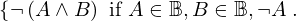
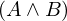

Expression of type Implies¶
from the theory of proveit.logic.booleans.conjunction¶
In [1]:
import proveit
# Automation is not needed when building an expression:
proveit.defaults.automation = False # This will speed things up.
proveit.defaults.inline_pngs = False # Makes files smaller.
%load_expr # Load the stored expression as 'stored_expr'
# import Expression classes needed to build the expression
from proveit import A, B
from proveit.logic import And, Boolean, Forall, Implies, Not
In [2]:
# build up the expression from sub-expressions
sub_expr1 = Not(A)
sub_expr2 = Not(And(A, B))
expr = Implies(Forall(instance_param_or_params = [A], instance_expr = Forall(instance_param_or_params = [B], instance_expr = sub_expr2, domain = Boolean, condition = sub_expr1), domain = Boolean), Forall(instance_param_or_params = [A, B], instance_expr = sub_expr2, domain = Boolean, condition = sub_expr1)).with_wrapping_at(1)
In [3]:
# check that the built expression is the same as the stored expression
assert expr == stored_expr
assert expr._style_id == stored_expr._style_id
print("Passed sanity check: expr matches stored_expr")
In [4]:
# Show the LaTeX representation of the expression for convenience if you need it.
print(stored_expr.latex())
In [5]:
stored_expr.style_options()
In [6]:
# display the expression information
stored_expr.expr_info()
| core type | sub-expressions | expression | |
|---|---|---|---|
| 0 | Operation | operator: 1 operands: 2 | |
| 1 | Literal |  | |
| 2 | ExprTuple | 3, 4 | |
| 3 | Operation | operator: 13 operand: 7 | |
| 4 | Operation | operator: 13 operand: 8 |  |
| 5 | ExprTuple | 7 | |
| 6 | ExprTuple | 8 | |
| 7 | Lambda | parameter: 36 body: 9 | |
| 8 | Lambda | parameters: 29 body: 10 | |
| 9 | Conditional | value: 11 condition: 17 | |
| 10 | Conditional | value: 21 condition: 12 |  |
| 11 | Operation | operator: 13 operand: 16 | |
| 12 | Operation | operator: 28 operands: 15 | |
| 13 | Literal |  | |
| 14 | ExprTuple | 16 | |
| 15 | ExprTuple | 17, 26, 27 |  |
| 16 | Lambda | parameter: 34 body: 19 | |
| 17 | Operation | operator: 30 operands: 20 |  |
| 18 | ExprTuple | 34 |  |
| 19 | Conditional | value: 21 condition: 22 | |
| 20 | ExprTuple | 36, 35 |  |
| 21 | Operation | operator: 32 operand: 25 |  |
| 22 | Operation | operator: 28 operands: 24 | |
| 23 | ExprTuple | 25 |  |
| 24 | ExprTuple | 26, 27 | |
| 25 | Operation | operator: 28 operands: 29 |  |
| 26 | Operation | operator: 30 operands: 31 |  |
| 27 | Operation | operator: 32 operand: 36 |  |
| 28 | Literal |  | |
| 29 | ExprTuple | 36, 34 |  |
| 30 | Literal |  | |
| 31 | ExprTuple | 34, 35 |  |
| 32 | Literal |  | |
| 33 | ExprTuple | 36 |  |
| 34 | Variable |  | |
| 35 | Literal |  | |
| 36 | Variable |  |